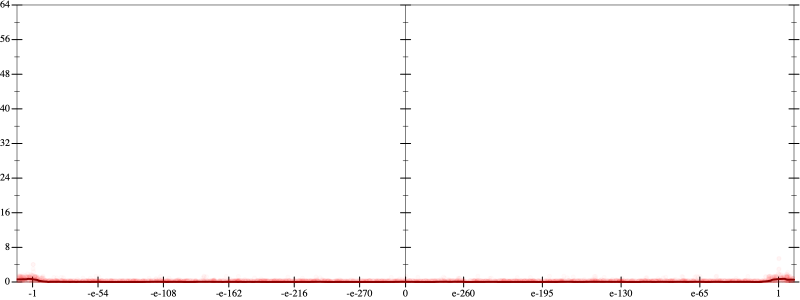
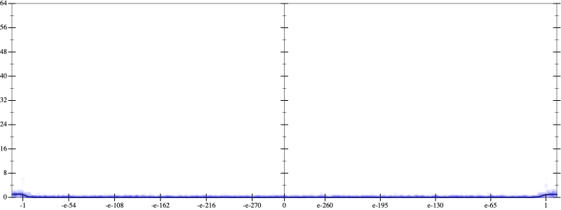
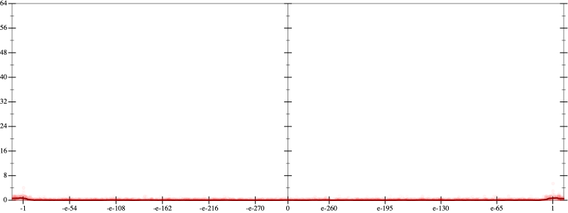
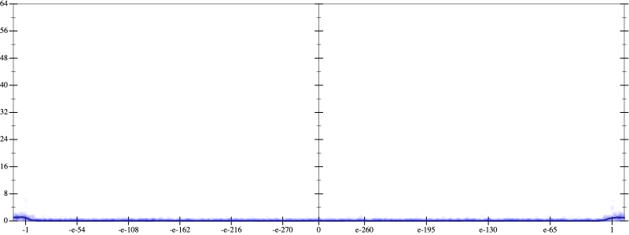

Initial program 0.1
\[\left(\left(-2.1875 \cdot x + 19.6875 \cdot \left(\left(x \cdot x\right) \cdot x\right)\right) + -43.3125 \cdot \left(\left(\left(\left(x \cdot x\right) \cdot x\right) \cdot x\right) \cdot x\right)\right) + 26.8125 \cdot \left(\left(\left(\left(\left(\left(x \cdot x\right) \cdot x\right) \cdot x\right) \cdot x\right) \cdot x\right) \cdot x\right)\]
Applied simplify0.1
\[\leadsto \color{blue}{\left(\left(x \cdot x\right) \cdot \left(x \cdot x\right)\right) \cdot \left(\left(x \cdot x\right) \cdot \left(26.8125 \cdot x\right) + x \cdot -43.3125\right) + \left(-2.1875 \cdot x + \left(x \cdot x\right) \cdot \left(19.6875 \cdot x\right)\right)}\]
- Using strategy
rm Applied add-cube-cbrt0.1
\[\leadsto \color{blue}{\left(\sqrt[3]{\left(\left(x \cdot x\right) \cdot \left(x \cdot x\right)\right) \cdot \left(\left(x \cdot x\right) \cdot \left(26.8125 \cdot x\right) + x \cdot -43.3125\right)} \cdot \sqrt[3]{\left(\left(x \cdot x\right) \cdot \left(x \cdot x\right)\right) \cdot \left(\left(x \cdot x\right) \cdot \left(26.8125 \cdot x\right) + x \cdot -43.3125\right)}\right) \cdot \sqrt[3]{\left(\left(x \cdot x\right) \cdot \left(x \cdot x\right)\right) \cdot \left(\left(x \cdot x\right) \cdot \left(26.8125 \cdot x\right) + x \cdot -43.3125\right)}} + \left(-2.1875 \cdot x + \left(x \cdot x\right) \cdot \left(19.6875 \cdot x\right)\right)\]
 
